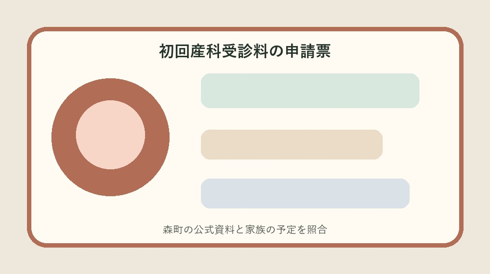
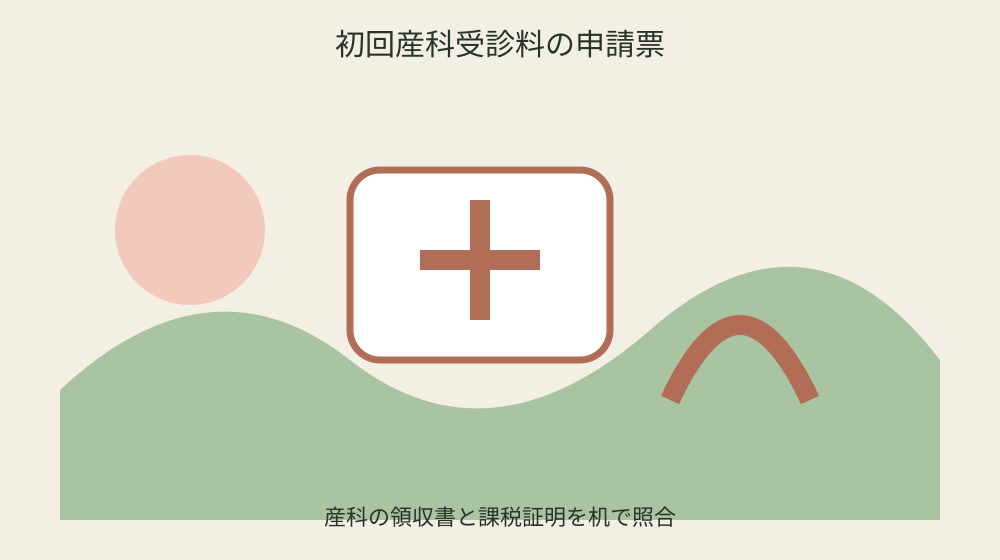
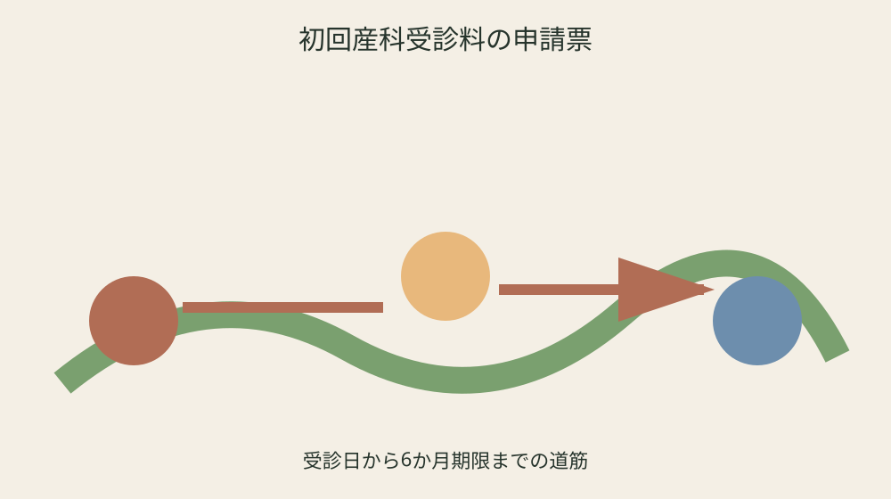

森町の初回産科受診料助成｜非課税確認・領収書・6か月期限を整理する

結論：初回産科受診料申請票へ対象、日付、手元資料、未確認事項を分け、最初の一問だけを森町へ確認します。
受診日の住民票所在地を確認する
受診日の住民票所在地を確認するでは、森町公式の「令和6年4月1日以降の受診が対象」を起点にします。初回産科受診料申請票には日付、対象、手元資料、確認日を別欄で置き、制度名だけを写して終わらせません。妊娠・出産の経過は人ごとに異なるため、共通条件と自分の状況を同じ文章に混ぜず、二列で見比べます。
手元では「市販検査薬で陽性後の妊娠判定受診が対象」も確認します。通知、母子健康手帳、領収書、受診票の原本は動かさず、写しへ番号を付けます。分からない欄は家族の記憶で埋めず、未確認の理由と次に尋ねる窓口を記すことが、初回産科受診料申請票を安全に使う条件です。
健康こども課へ相談するときは、受診日の住民票所在地を確認するについて確認済みの一点と質問したい一点を分けて伝えます。「助成対象は初回の妊娠判定受診費用」が個別にどう当てはまるか、回答日、担当、必要書類、次の期限まで書けば、同じ説明を最初から繰り返さずに済みます。
初回産科受診料申請票の旧版は消しません。「上限額と自費額の低い方を助成」を採用した根拠、変更前の記録、更新日を残します。医療機関の受入条件や年度案内は変わり得るため、予約・支払・申請の直前には現在の公式案内を再確認してください。
妊娠判定の初回受診だけを抜き出す
妊娠判定の初回受診だけを抜き出すでは、森町公式の「受診日に森町に住民票が必要」を起点にします。初回産科受診料申請票には日付、対象、手元資料、確認日を別欄で置き、制度名だけを写して終わらせません。妊娠・出産の経過は人ごとに異なるため、共通条件と自分の状況を同じ文章に混ぜず、二列で見比べます。
手元では「課税状況確認への同意が必要」も確認します。通知、母子健康手帳、領収書、受診票の原本は動かさず、写しへ番号を付けます。分からない欄は家族の記憶で埋めず、未確認の理由と次に尋ねる窓口を記すことが、初回産科受診料申請票を安全に使う条件です。
健康こども課へ相談するときは、妊娠判定の初回受診だけを抜き出すについて確認済みの一点と質問したい一点を分けて伝えます。「1回の妊娠につき1回」が個別にどう当てはまるか、回答日、担当、必要書類、次の期限まで書けば、同じ説明を最初から繰り返さずに済みます。
初回産科受診料申請票の旧版は消しません。「保険診療分は対象外」を採用した根拠、変更前の記録、更新日を残します。医療機関の受入条件や年度案内は変わり得るため、予約・支払・申請の直前には現在の公式案内を再確認してください。
自費と保険診療を分ける
自費と保険診療を分けるでは、森町公式の「住民税非課税世帯等または生活保護世帯が対象」を起点にします。初回産科受診料申請票には日付、対象、手元資料、確認日を別欄で置き、制度名だけを写して終わらせません。妊娠・出産の経過は人ごとに異なるため、共通条件と自分の状況を同じ文章に混ぜず、二列で見比べます。
手元では「関係機関との必要な情報共有への同意が必要」も確認します。通知、母子健康手帳、領収書、受診票の原本は動かさず、写しへ番号を付けます。分からない欄は家族の記憶で埋めず、未確認の理由と次に尋ねる窓口を記すことが、初回産科受診料申請票を安全に使う条件です。
健康こども課へ相談するときは、自費と保険診療を分けるについて確認済みの一点と質問したい一点を分けて伝えます。「上限は10,000円」が個別にどう当てはまるか、回答日、担当、必要書類、次の期限まで書けば、同じ説明を最初から繰り返さずに済みます。
初回産科受診料申請票の旧版は消しません。「受診日から6か月以内に申請」を採用した根拠、変更前の記録、更新日を残します。医療機関の受入条件や年度案内は変わり得るため、予約・支払・申請の直前には現在の公式案内を再確認してください。
世帯の課税資料を確認する
世帯の課税資料を確認するでは、森町公式の「市販検査薬で陽性後の妊娠判定受診が対象」を起点にします。初回産科受診料申請票には日付、対象、手元資料、確認日を別欄で置き、制度名だけを写して終わらせません。妊娠・出産の経過は人ごとに異なるため、共通条件と自分の状況を同じ文章に混ぜず、二列で見比べます。
手元では「助成対象は初回の妊娠判定受診費用」も確認します。通知、母子健康手帳、領収書、受診票の原本は動かさず、写しへ番号を付けます。分からない欄は家族の記憶で埋めず、未確認の理由と次に尋ねる窓口を記すことが、初回産科受診料申請票を安全に使う条件です。
健康こども課へ相談するときは、世帯の課税資料を確認するについて確認済みの一点と質問したい一点を分けて伝えます。「上限額と自費額の低い方を助成」が個別にどう当てはまるか、回答日、担当、必要書類、次の期限まで書けば、同じ説明を最初から繰り返さずに済みます。
初回産科受診料申請票の旧版は消しません。「令和6年4月1日以降の受診が対象」を採用した根拠、変更前の記録、更新日を残します。医療機関の受入条件や年度案内は変わり得るため、予約・支払・申請の直前には現在の公式案内を再確認してください。

情報共有への同意範囲を読む
情報共有への同意範囲を読むでは、森町公式の「課税状況確認への同意が必要」を起点にします。初回産科受診料申請票には日付、対象、手元資料、確認日を別欄で置き、制度名だけを写して終わらせません。妊娠・出産の経過は人ごとに異なるため、共通条件と自分の状況を同じ文章に混ぜず、二列で見比べます。
手元では「1回の妊娠につき1回」も確認します。通知、母子健康手帳、領収書、受診票の原本は動かさず、写しへ番号を付けます。分からない欄は家族の記憶で埋めず、未確認の理由と次に尋ねる窓口を記すことが、初回産科受診料申請票を安全に使う条件です。
健康こども課へ相談するときは、情報共有への同意範囲を読むについて確認済みの一点と質問したい一点を分けて伝えます。「保険診療分は対象外」が個別にどう当てはまるか、回答日、担当、必要書類、次の期限まで書けば、同じ説明を最初から繰り返さずに済みます。
初回産科受診料申請票の旧版は消しません。「受診日に森町に住民票が必要」を採用した根拠、変更前の記録、更新日を残します。医療機関の受入条件や年度案内は変わり得るため、予約・支払・申請の直前には現在の公式案内を再確認してください。
領収書と明細書を両方保管する
領収書と明細書を両方保管するでは、森町公式の「関係機関との必要な情報共有への同意が必要」を起点にします。初回産科受診料申請票には日付、対象、手元資料、確認日を別欄で置き、制度名だけを写して終わらせません。妊娠・出産の経過は人ごとに異なるため、共通条件と自分の状況を同じ文章に混ぜず、二列で見比べます。
手元では「上限は10,000円」も確認します。通知、母子健康手帳、領収書、受診票の原本は動かさず、写しへ番号を付けます。分からない欄は家族の記憶で埋めず、未確認の理由と次に尋ねる窓口を記すことが、初回産科受診料申請票を安全に使う条件です。
健康こども課へ相談するときは、領収書と明細書を両方保管するについて確認済みの一点と質問したい一点を分けて伝えます。「受診日から6か月以内に申請」が個別にどう当てはまるか、回答日、担当、必要書類、次の期限まで書けば、同じ説明を最初から繰り返さずに済みます。
初回産科受診料申請票の旧版は消しません。「住民税非課税世帯等または生活保護世帯が対象」を採用した根拠、変更前の記録、更新日を残します。医療機関の受入条件や年度案内は変わり得るため、予約・支払・申請の直前には現在の公式案内を再確認してください。
妊娠届出書等を揃える
妊娠届出書等を揃えるでは、森町公式の「助成対象は初回の妊娠判定受診費用」を起点にします。初回産科受診料申請票には日付、対象、手元資料、確認日を別欄で置き、制度名だけを写して終わらせません。妊娠・出産の経過は人ごとに異なるため、共通条件と自分の状況を同じ文章に混ぜず、二列で見比べます。
手元では「上限額と自費額の低い方を助成」も確認します。通知、母子健康手帳、領収書、受診票の原本は動かさず、写しへ番号を付けます。分からない欄は家族の記憶で埋めず、未確認の理由と次に尋ねる窓口を記すことが、初回産科受診料申請票を安全に使う条件です。
健康こども課へ相談するときは、妊娠届出書等を揃えるについて確認済みの一点と質問したい一点を分けて伝えます。「令和6年4月1日以降の受診が対象」が個別にどう当てはまるか、回答日、担当、必要書類、次の期限まで書けば、同じ説明を最初から繰り返さずに済みます。
初回産科受診料申請票の旧版は消しません。「市販検査薬で陽性後の妊娠判定受診が対象」を採用した根拠、変更前の記録、更新日を残します。医療機関の受入条件や年度案内は変わり得るため、予約・支払・申請の直前には現在の公式案内を再確認してください。
前住所地の証明が必要か確かめる
前住所地の証明が必要か確かめるでは、森町公式の「1回の妊娠につき1回」を起点にします。初回産科受診料申請票には日付、対象、手元資料、確認日を別欄で置き、制度名だけを写して終わらせません。妊娠・出産の経過は人ごとに異なるため、共通条件と自分の状況を同じ文章に混ぜず、二列で見比べます。
手元では「保険診療分は対象外」も確認します。通知、母子健康手帳、領収書、受診票の原本は動かさず、写しへ番号を付けます。分からない欄は家族の記憶で埋めず、未確認の理由と次に尋ねる窓口を記すことが、初回産科受診料申請票を安全に使う条件です。
健康こども課へ相談するときは、前住所地の証明が必要か確かめるについて確認済みの一点と質問したい一点を分けて伝えます。「受診日に森町に住民票が必要」が個別にどう当てはまるか、回答日、担当、必要書類、次の期限まで書けば、同じ説明を最初から繰り返さずに済みます。
初回産科受診料申請票の旧版は消しません。「課税状況確認への同意が必要」を採用した根拠、変更前の記録、更新日を残します。医療機関の受入条件や年度案内は変わり得るため、予約・支払・申請の直前には現在の公式案内を再確認してください。

振込口座を申請者名義で置く
振込口座を申請者名義で置くでは、森町公式の「上限は10,000円」を起点にします。初回産科受診料申請票には日付、対象、手元資料、確認日を別欄で置き、制度名だけを写して終わらせません。妊娠・出産の経過は人ごとに異なるため、共通条件と自分の状況を同じ文章に混ぜず、二列で見比べます。
手元では「受診日から6か月以内に申請」も確認します。通知、母子健康手帳、領収書、受診票の原本は動かさず、写しへ番号を付けます。分からない欄は家族の記憶で埋めず、未確認の理由と次に尋ねる窓口を記すことが、初回産科受診料申請票を安全に使う条件です。
健康こども課へ相談するときは、振込口座を申請者名義で置くについて確認済みの一点と質問したい一点を分けて伝えます。「住民税非課税世帯等または生活保護世帯が対象」が個別にどう当てはまるか、回答日、担当、必要書類、次の期限まで書けば、同じ説明を最初から繰り返さずに済みます。
初回産科受診料申請票の旧版は消しません。「関係機関との必要な情報共有への同意が必要」を採用した根拠、変更前の記録、更新日を残します。医療機関の受入条件や年度案内は変わり得るため、予約・支払・申請の直前には現在の公式案内を再確認してください。
受診日から6か月を数える
受診日から6か月を数えるでは、森町公式の「上限額と自費額の低い方を助成」を起点にします。初回産科受診料申請票には日付、対象、手元資料、確認日を別欄で置き、制度名だけを写して終わらせません。妊娠・出産の経過は人ごとに異なるため、共通条件と自分の状況を同じ文章に混ぜず、二列で見比べます。
手元では「令和6年4月1日以降の受診が対象」も確認します。通知、母子健康手帳、領収書、受診票の原本は動かさず、写しへ番号を付けます。分からない欄は家族の記憶で埋めず、未確認の理由と次に尋ねる窓口を記すことが、初回産科受診料申請票を安全に使う条件です。
健康こども課へ相談するときは、受診日から6か月を数えるについて確認済みの一点と質問したい一点を分けて伝えます。「市販検査薬で陽性後の妊娠判定受診が対象」が個別にどう当てはまるか、回答日、担当、必要書類、次の期限まで書けば、同じ説明を最初から繰り返さずに済みます。
初回産科受診料申請票の旧版は消しません。「助成対象は初回の妊娠判定受診費用」を採用した根拠、変更前の記録、更新日を残します。医療機関の受入条件や年度案内は変わり得るため、予約・支払・申請の直前には現在の公式案内を再確認してください。
良い点
初回産科受診料申請票で制度条件と個別事情を分けると、次に確認すべき一問が見えます。
受診日に森町に住民票が必要という具体条件を家族で共有でき、担当が替わっても根拠をたどれます。
初回産科受診料の申請票に期限と原本の場所を集めれば、書類の取り直しを減らせます。
初回産科受診料申請票で未確認を未確認のまま残せることも、安全上の利点です。
注文したい点
初回産科受診料の申請票に関する森町の案内は制度条件が詳しい一方、初めての人には申請順序が読み取りにくい部分があります。
住民税非課税世帯等または生活保護世帯が対象に関係する施設や医療機関の条件を同じ画面で比較できると、電話確認がさらに少なくなります。
初回産科受診料申請票で使う年度案内は、更新時に変更箇所と変更日が目立つと旧資料との取り違えを防げます。
初回産科受診料の申請票の現行制度を否定するのではなく、一度で正しい窓口へ届くための改善要望です。
対案・結論
結論は初回産科受診料申請票を今日一枚作り、未確認欄を一つだけ相談することです。
初回産科受診料申請票には公式事実、手元資料、窓口回答、次の期限を四列で置きます。
課税状況確認への同意が必要を確認しても個別可否は異なるため、初回産科受診料の申請票を使う直前に再確認します。
初回産科受診料申請票の旧版を残し、家族が同じ根拠から続けられる状態を完成とします。
家族に残す記録
初回産科受診料の申請票に使う母子健康手帳や領収書の原本保管場所、確認日、次の予定を家族へ伝えます。
初回産科受診料申請票に医療情報を書く場合は共有相手と範囲を決め、外部提出版に不要な情報を載せません。
初回産科受診料の申請票の連絡先だけでなく、どの条件を何のために尋ねるかも一文で残します。
初回産科受診料申請票では申請控えと入金・利用結果を同じ番号で結びます。
大石の視点
ここまでの初回産科受診料の申請票の制度条件は森町公式資料から確認した事実です。以下は私、大石浩之の実務提案であり、森町の公式見解ではありません。
私は初回産科受診料申請票を紙一枚から始め、原本を動かさず写しへ番号を付ける方法を勧めます。
初回産科受診料の申請票の利用が未定でも、住所、名義、連絡先、期限を整理するだけで家族の負担は軽くなります。
初回産科受診料申請票の未確認欄は失敗ではなく、根拠のない断定を避けるための大切な記録です。
まとめ
初回産科受診料申請票は、すべてを一度で決めるためではなく、次の確認を安全にする表です。
最初は「令和6年4月1日以降の受診が対象」と手元資料を照合してください。
初回産科受診料の申請票に不足があれば確認先と期限を残し、予約や支払の前に最新案内を見ます。
初回産科受診料申請票を家族へ渡すときは原本場所と次の担当を添えてください。
よくある質問
初回産科受診料申請票は何から始めますか。
対象、基準日、手元資料を一行にし、「令和6年4月1日以降の受診が対象」と照合します。
資料が足りなくても作れますか。
作れます。不足欄を推測で埋めず、必要資料、確認先、期限を記します。
一度確認すれば再確認は不要ですか。
不要ではありません。予約、支払、申請の直前に現行案内を確認します。
家族へ何を渡しますか。
確認済み事実、未確認事項、次の担当、期限、原本保管場所を渡します。
公式情報源
- 初回産科受診料助成（2026年8月26日確認）
- 妊娠したら（相談・支援等）（2026年8月26日確認）
最終確認日：2026-08-26